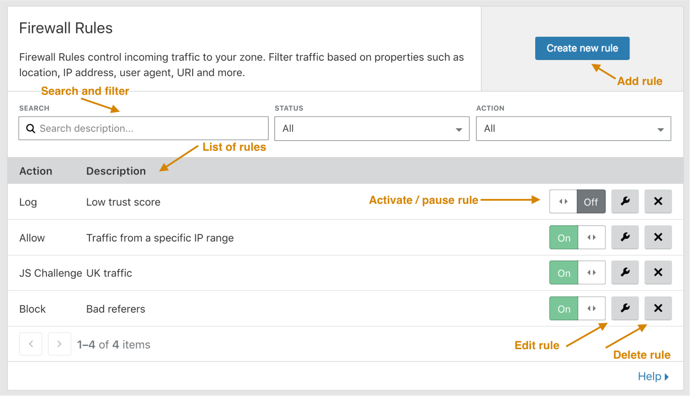

Cloudflare Firewall app
2017
Imagine trying to protect your website from a potential cyberattack, but your firewall's advanced features are locked behind a maze of complexity. This was the reality for many Cloudflare users, where the power of the Cloudflare Firewall custom rules wasn't fully accessible due to a challenging user experience. Cloudflare Firewall app is a critical security tool for many of our users, but accessing its advanced features was a challenge for many of our users. This project aimed to simplify the firewall custom rules experience for all customer segments, from enterprise teams to free plan users.
back to the top
back to portfolio
01. Problem
The frustration of spam emails fueled Cloudflare's creation. The founders (Matthew, Michelle, and Lee) aimed to build a solution that could intercept and prevent this unwanted traffic. While Cloudflare's basic firewall is user-friendly and sufficient for basic needs, users seeking more control and precision face a significant hurdle: figuring out where to begin.
- Limited Accessibility: Powerful firewall settings were previously inaccessible to most users, requiring manual internal team intervention and lot of back-and-forth emails.
- Complex Setup: Custom firewall configurations were cumbersome and time-consuming, even for technical users.
Key problems

The starting point for custom WAF (Web Application Firewall) rules was a frustrating dead end: a prompt to "Please contact our team." This meant relying on Cloudflare's internal team to manually configure your rules, and any changes required repeating the entire process.

Traffic data for the Firewall page was telling. A significant portion (labeled user as "None") represented interactions with our internal team building custom rules for customers. This highlighted the inefficiency of the existing system.
02. Research
Our core goal was to shift control back to the user. This meant designing a user interface that enabled users to create and manage their own custom firewall rules, eliminating the need for internal support and minimizing friction in the user experience

To understand the best approach for the custom firewall rule builder, we conducted a comprehensive comparative research analysis. We evaluated a wide range of existing rule builders, including operating system tools and third-party extensions. This exploration helped us identify the core components and user interactions that were most effective and intuitive.

Analyzing existing rule builders revealed a spectrum of approaches. Some were overly complex, while others relied heavily on visual elements and metaphors. Our challenge was to identify the core functionalities essential for Cloudflare's custom WAF rule builder. Striking a balance was key: ensuring ease of use for beginners while not compromising the precise control desired by technical users who might leverage a Domain Specific Language (DSL) for advanced customization.

To gain a deep understanding of the existing workflow and user needs, I collaborated with internal sales engineer who built custom firewall rules for our key customers. By discussing firewall functionalities and the level of customization required, I was able to grasp the complexity and scope of the solution needed. This collaborative approach proved valuable: the flow chart I created to visualize the firewall process was even adopted by the sales engineer to explain the product to enterprise clients.
03. Analysis
Armed with a solid understanding of the firewall's functionality and having explored diverse rule builder approaches, it was time to move on to the next phase: evaluating which elements would best fit our user needs and the Cloudflare experience.

To ensure a seamless user experience, I began by mapping out the overall workflow for creating, reading, updating, and deleting (CRUD) firewall rules. This user flow analysis helped us identify the different UI components needed to support each stage of the process effectively.
The visual interface, a key component of the rule builder, needed to provide clear and intuitive functionality. I focused on breaking down the core elements: defining actions triggered by user-selected events. These triggers could be either additive (including specific elements) or subtractive (excluding elements), depending on the chosen operand (data point used in the rule).

To accommodate the full range of potential customizations, we brainstormed and prototyped various options for each filter function section. This exploration ensured we could address diverse user needs. Additionally, I experimented with a drag-and-drop functionality for visually reordering rules, a feature frequently requested by customers for easier rule management.
04. Testing
To ensure the user interface (UI) effectively addressed customer needs, I collaborated with engineers and the London-based engineering and sales team. Through paper prototyping sessions, we gained valuable insights into how both teams interpreted customer wants and translated them into actionable design decisions. This teamwork led to the development of several key UI components:
- Enhanced feedback mechanisms that provided users with clearer information on existing firewall rules and their effectiveness.
- A basic rule builder prototype that allowed users to switch between the visual interface and a dedicated Domain Specific Language (DSL) view. This addressed the needs of both technical and non-technical users.

In collaboration with Firewall Product Manager Alex, we conducted a customer pain point and priority analysis. This analysis helped us define the scope of work for the initial launch (round one). By focusing on the most critical user needs, we were able to prioritize features for round one and identify those best suited for a fast follow-up update in the next release.
05. Design
To prioritize user adoption for the initial launch, we opted for a streamlined rule builder design. This meant strategically deferring the drag-and-drop functionality for reordering conditionals.
To ensure the rule builder's interaction design was intuitive, I created a series of simple HTML prototypes showcasing different variations. This iterative prototyping allowed for early user feedback and helped refine the final interface. You can experience a simplified prototype in my side-project section.

In conjunction with the revamped WAF rule builder, we implemented additional feedback mechanisms and data points. This empowered users with greater visibility into their firewall's effectiveness. Users could now access valuable insights such as the impact of specific rules and the overall performance of their firewall.

Additionally, features like rate-limited notifications and an event log provided real-time awareness of triggered rules, allowing for proactive management and fine-tuning of security measures.
06. Results
The redesigned custom firewall experience yielded positive results, providing valuable insights for future iterations. Here's a quantitative look at the impact:
High User Engagement: Within the first 6 days of launch, nearly 4,000 users actively participated by creating a new custom rule. Over half (over 2,000 users) successfully completed the rule creation process, saving and deploying at least one rule. This suggests the core user experience resonated well with a significant portion of the user base.

Areas for Optimization: The 60% conversion rate for creating custom rules offers an opportunity to further improve the user experience. Analyzing user behavior can pinpoint specific areas where users might encounter friction, allowing for targeted improvements in subsequent follow up Firewall design.
Advanced User Success: For highly technical users, the new DSL expression editor proved valuable. While a smaller group (approximately 350 users) explored this advanced feature, a significant percentage (aproximately 200 users) successfully created and deployed custom rules using the editor.

Reduced Support Burden and User Empowerment: The impact of the redesigned custom firewall experience extended beyond user adoption. Support ticket data revealed a significant decrease in inquiries related to firewall rules.
- Initial Inquiry Spike: As expected, the launch week saw a temporary increase in support tickets (21 tickets), likely due to users familiarizing themselves with the new features. However, this initial rise was quickly followed by a substantial decrease.
- Sustainable Reduction: Just two weeks after launch, support tickets related to firewall rules dropped by 33% week-over-week (33 tickets). This downward trend continued, with a further 28% reduction the following week (13 tickets).
Sustainable Reduction: Just two weeks after launch, support tickets related to firewall rules dropped by 33% week-over-week (33 tickets). This downward trend continued, with a further 28% reduction the following week (13 tickets).
The success of the redesigned custom firewall experience stemmed from close collaboration across various teams. Throughout the design process, I worked hand-in-hand with:
- Engineers: Regular consultations ensured the technical feasibility of design decisions. Their expertise played a vital role in shaping the overall architecture and functionality of the new rule builder.
- Sales Team: Insights from the sales team, especially from the London office through paper prototyping sessions, helped bridge the gap between user needs and practical application in real-world customer scenarios.
- Marketing Team: Collaboration with the marketing team ensured the redesigned experience aligned with Cloudflare's overall branding and messaging.
The redesigned custom firewall experience, proved to be a success. User engagement metrics, reduced support tickets,
and positive feedback all indicate a significant improvement for our customers. This project serves as a springboard
for continued innovation.
By prioritizing an intuitive user experience and empowering users with self-service
tools, we have empowered them to take control of their firewall security. Looking ahead, the Firewall team had plan to
leverage the learnings from this project to introduce even more advanced functionalities while ensuring a seamless
experience for all user levels.

A Big Thank You to the Team!
This project wouldn't have been possible without the incredible collaboration and support from the London team. Huge thanks to Alex, Harley, Mark, Andrew, David, and everyone else who lent their expertise and insights throughout the process. It was a true pleasure working alongside such a talented group, and exploring London while collaborating on the firewall project made it an even more rewarding experience.